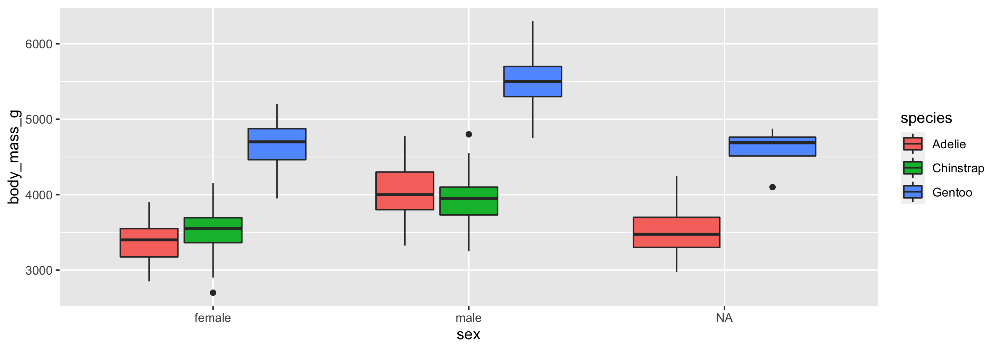
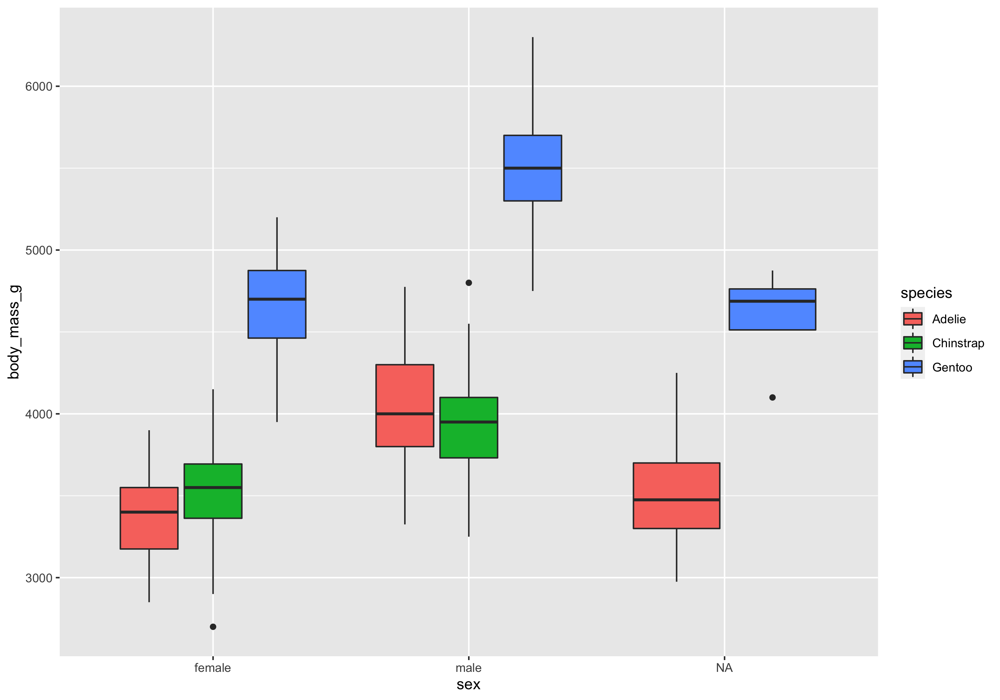
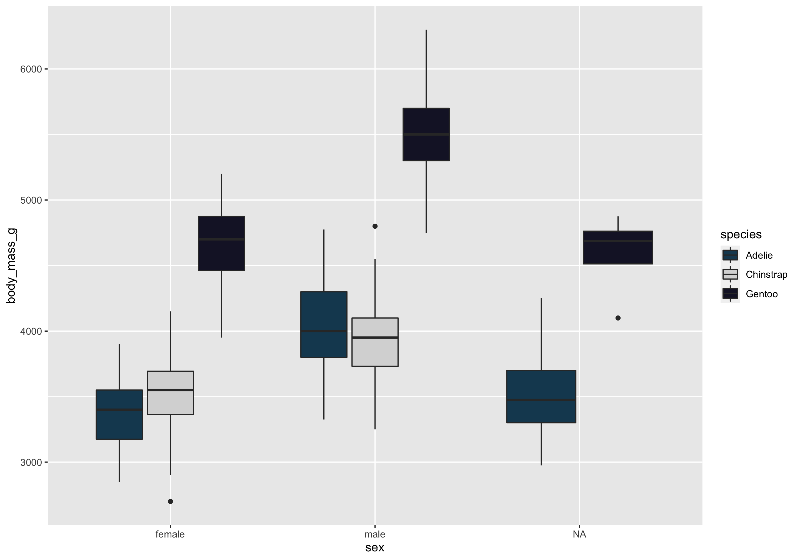

An Antarctic Tour of the Tidyverse
v2.0 – Quarto RevealJS Remix
Silvia Canelón
Data Analyst @ Penn Urban Health Lab
University of Pennsylvania, Philadelphia, PA, USA

Meet our penguin friends!
Chinstrap

Gentoo

Adélie

readr: info
Importing data is the very first step!
You can use readr to import rectangular data.
You can import…
- comma separated (CSV) files with
read_csv() - tab separated files with
read_tsv() - general delimited files with
read_delim() - fixed width files with
read_fwf() - tabular files where columns are separated by white-space with
read_table() - web log files with
read_log()


tibble: info
A tibble is much like the dataframe in base R,
but optimized for use in the Tidyverse.

ggplot2: info
ggplot2 uses the “Grammar of Graphics” and layers graphical components together to help us create a plot
Let’s start by making a simple plot of our data!

ggplot2: exercise
Get a full view of the dataset:
Or catch a glimpse:
Rows: 344
Columns: 8
$ species <fct> Adelie, Adelie, Adelie, Adelie, Adelie, Adelie, Adel…
$ island <fct> Torgersen, Torgersen, Torgersen, Torgersen, Torgerse…
$ bill_length_mm <dbl> 39.1, 39.5, 40.3, NA, 36.7, 39.3, 38.9, 39.2, 34.1, …
$ bill_depth_mm <dbl> 18.7, 17.4, 18.0, NA, 19.3, 20.6, 17.8, 19.6, 18.1, …
$ flipper_length_mm <int> 181, 186, 195, NA, 193, 190, 181, 195, 193, 190, 186…
$ body_mass_g <int> 3750, 3800, 3250, NA, 3450, 3650, 3625, 4675, 3475, …
$ sex <fct> male, female, female, NA, female, male, female, male…
$ year <int> 2007, 2007, 2007, 2007, 2007, 2007, 2007, 2007, 2007…Let’s see if body mass varies by penguin sex using geom_point()
![A scatterplot with categorical penguin sex along the x axis and continuous body mass along the y axis. The three sex categories are female, male, and NA. The body mass appears to range between 2400g and 6500g. Because this is a scatterplot, there are various points scattered along the y axis in a line above each sex category, which doesn't tell us much about these data. There are other types of plots better suited for visualizing the relationship between a continuous variable and a categorical variable.](index_files/figure-revealjs/scatterplot-1.png)
Let’s see if body mass varies by penguin sex, this time with geom_boxplot()
![A boxplot with penguin sex along the x axis and body mass along the y axis. Again, the three sex categories are female, male, and NA, and the body mass appears to range between 2400g and 6500g. Because this is a boxplot, we can visualize the minimum value, first quartile, median, third quartile, and maximum value of penguin body mass, for each penguin sex category. Female penguins have a lower median body mass than male penguins, while the NA sex category is somewhere in between the two. There are no outliers.](index_files/figure-revealjs/boxplot-1.png)
Let’s see if body mass varies by penguin sex, and now fill the boxplots
according to penguin species
![A boxplot with penguin sex along the x axis and body mass along the y axis. Again, the three sex categories are female, male, and NA, and the body mass appears to range between 2400g and 6500g. This time, instead of one boxplot per sex category, there is a boxplot for each species, per sex category, and these are filled with different colors. Gentoo boxplots are blue, Adélie boxplots are reddish, and Chinstrap boxplots are green. Male penguins have higher body mass across species, and Gentoo penguins stand out as having higher body mass than both Chinstrap and Adélie penguins. Low body mass outliers exist for female Chinstrap penguins and NA Gentoo penguins, and high body mass outliers exist for male Chinstrap penguins. There is no boxplot for Chinstrap penguins in the NA sex category.](index_files/figure-revealjs/by-species-1.png)
The boxplot filled by species helps us see…
- Gentoo penguins have higher body mass than Adélie and Chinstrap penguins
- Higher body mass among male Gentoo penguins compared to female penguins
- Pattern not as discernible when comparing Adélie and Chinstrap penguins
- No
NAs among Chinstrap penguin data points! sex was available for each observation

dplyr: info
Data transformation helps you get the data in exactly the right form you need
With dplyr you can:
- create new variables
- create summaries
- rename variables
- reorder observations
- …and more!
- Pick observations by their values with
filter(). - Reorder the rows with
arrange(). - Pick variables by their names
select(). - Create new variables with functions of existing variables with
mutate(). - Collapse many values down to a single summary with
summarize(). group_by()gets the above functions to operate group-by-group rather than on the entire dataset.- and
count()+add_count()simplifygroup_by()+summarize()when you just want to count

forcats: info
forcats helps us work with categorical variables or factors
These are variables that have a fixed and known set of possible values, like species, island, and sex in our penguins dataset
stringr: info
stringr helps us manipulate strings!
The package includes many functions to help us with regular expressions, which are a concise language for describing patterns in strings.
These functions help us
- detect matches
- subset strings
- manage string lengths
- mutate strings
- join and split strings
- order strings
- …and more!

tidyr: info
tidyr helps us transform our dataset into a tidy format
There are three interrelated rules which make a dataset tidy:
- Each variable must have its own column.
- Each observation must have its own row.
- Each value must have its own cell.


purrr: info
Provides tools for working with functions and vectors
The purrr family of functions helps us replace for loops, making our code easier to read and more succint.
With purrr you can
- Iterate over a single input with
map() - Iterate over two inputs in parallel with
map2() - Iterate with multiple arguments with
pmap() - Iterate with multiple arguments and functions with
invoke_map() - Call a function for its side-effects with
walk(),walk2(), andpwalk()

{fig-alt=“R4DS book cover”}
purrr: exercise
Ok, we love our earlier boxplot showing us body_mass_g by sex and colored by species…
…but let’s change up the colors to keep with our Antarctica theme!
I’m a big fan of the color palettes in the nord 📦

Let’s turn this plot…

…into this one!

Note: The color choices in this example are meant for demo purposes only. Be sure to consider the accessibility of your data viz, including color contrast between different elements.
You can choose colors using
the color hex codes
And assign them using the scale_fill_manual() function

You can also use the palette name, like mountain_forms, though the colors assigned may not align with what you want
The prismatic 📦 helps us see the colors that correspond to each color hex code (mostly), with the color() function


🎨 r-color-palettes repo from Emil Hvitfeldt
Like this Wes Anderson themed one! And many, many others 🤩

lubridate: info
lubridate helps us work with dates and times, including
- a date like
August 31, 2022 - a time like
10:35 am - a date-time like
2022-08-31 10:35:00
You can…
- convert strings or numbers to date-times
- get and set components of a date-time
- round date-times
- add or subtract periods to model events that happen at specific clock times
- add or substract durations to model a physical process
- work with time intervals